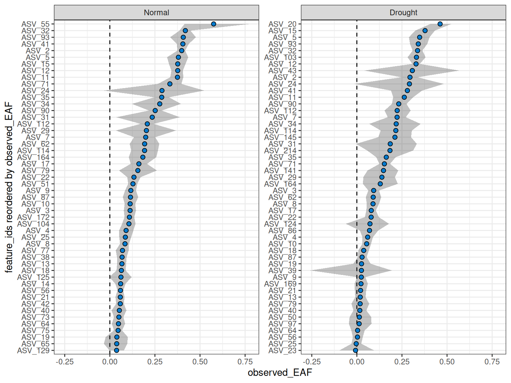
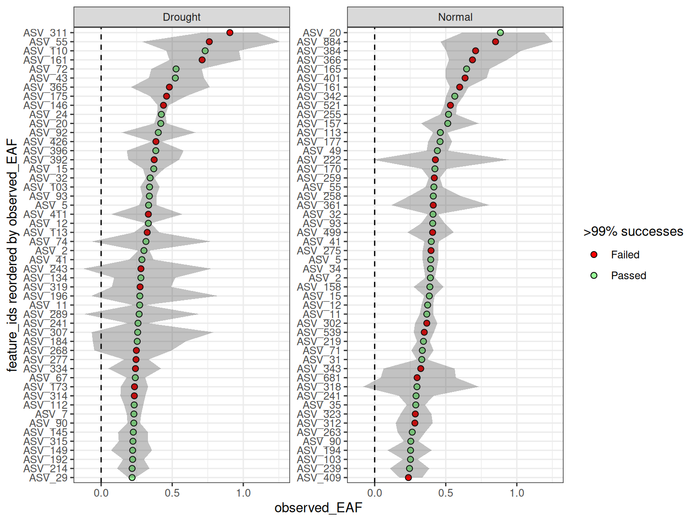
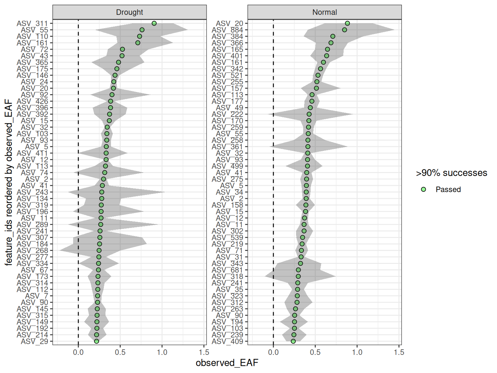

Background
In qSIP2, you can run the standard EAF workflow with multiple qsip_data objects at the same time. This vignette will show you different ways to create and use multiple qsip_data objects in the same workflow.
Multiple Object Structure
The format for storing multiple qsip_data objects is a simple named list, where the names are a descriptive but succinct name for that comparison, and the value is the qsip_data object. The list can be created in a few different ways, including “by hand”, by formatting the get_comparison_groups() output, or providing a dataframe to the dedicated run_comparison_groups() function. Each of these are detailed below.
Building the multi qsip_data object “by hand”
In the standard vignette("qSIP_workflow") vignette we filtered the example object to create “normal” and “drought” objects, and then proceeded through the workflow with these two objects independently. However, these two objects can instead be combined using list() to work with both simultaneously. We can run a validation function that will return TRUE if the list is correct.
qsip_normal <- run_feature_filter(example_qsip_object,
unlabeled_source_mat_ids = get_all_by_isotope(example_qsip_object, "12C"),
labeled_source_mat_ids = c("S178", "S179", "S180"),
min_unlabeled_sources = 6, min_labeled_sources = 3,
min_unlabeled_fractions = 5, min_labeled_fractions = 5,
quiet = TRUE
) |>
run_resampling(with_seed = 49, quiet = TRUE, progress = FALSE) |>
run_EAF_calculations()
qsip_drought <- run_feature_filter(example_qsip_object,
unlabeled_source_mat_ids = get_all_by_isotope(example_qsip_object, "12C"),
labeled_source_mat_ids = c("S200", "S201", "S202", "S203"),
min_unlabeled_sources = 6, min_labeled_sources = 3,
min_unlabeled_fractions = 5, min_labeled_fractions = 5,
quiet = TRUE
) |>
run_resampling(with_seed = 50, quiet = TRUE, progress = FALSE) |>
run_EAF_calculations()
qsip_list_1 = list("Normal" = qsip_normal,
"Drought" = qsip_drought)
is_qsip_data_list(qsip_list_1)
#> [1] TRUEThe list objects now holds both qsip_data objects, but each can be accessed by name (e.g. qsip_list_1$Normal) if needed. When building by hand, the main benefit of combining multiple objects together is that you get shared reporting with summary functions like summarize_EAF_values() and plot_EAF_values().
summarize_EAF_values(qsip_list_1)#> ℹ Confidence level = 0.9| group | feature_id | observed_EAF | mean_resampled_EAF | lower | upper | pval | labeled_resamples | unlabeled_resamples | labeled_sources | unlabeled_sources |
|---|---|---|---|---|---|---|---|---|---|---|
| Normal | ASV_1 | -0.0153107 | -0.0162090 | -0.0524399 | 0.0239385 | 0.472 | 1000 | 1000 | 3 | 8 |
| Drought | ASV_1 | -0.0333856 | -0.0322146 | -0.0792106 | 0.0219181 | 0.320 | 1000 | 1000 | 4 | 8 |
| Normal | ASV_10 | 0.1126260 | 0.1116218 | 0.0823812 | 0.1405383 | 0.000 | 1000 | 1000 | 3 | 8 |
| Drought | ASV_10 | 0.0543136 | 0.0542462 | 0.0305884 | 0.0788885 | 0.000 | 1000 | 1000 | 4 | 8 |
| Drought | ASV_100 | -0.0892684 | -0.0885048 | -0.1485629 | -0.0283228 | 0.020 | 1000 | 1000 | 3 | 7 |
| Normal | ASV_102 | -0.0080214 | -0.0090271 | -0.0746514 | 0.0546485 | 0.782 | 1000 | 1000 | 3 | 8 |
In the table above, you can see that the feature_id column is repeated for each group.
plot_EAF_values(qsip_list_1,
top = 50,
error = "ribbon")
#> ℹ Confidence level = 0.9
Other helper functions can be used on the list as well.
n_resamples(qsip_list_1)
#> # A tibble: 2 × 2
#> group n_resamples
#> <chr> <dbl>
#> 1 Normal 1000
#> 2 Drought 1000
resample_seed(qsip_list_1)
#> # A tibble: 2 × 2
#> group seed
#> <chr> <dbl>
#> 1 Normal 49
#> 2 Drought 50Dataframe-based multi qsip_data object
Although building the list by hand can be useful in organizing the output, the functionality of the list structure really shines when you start with a dataframe of comparisons you want to make. This workflow will do all of the steps from the initial, unfiltered qsip_data objects without the need to manually build each comparison object.
Dataframe Structure
The dataframe has a simple structure, and requires at a minimum three columns. The group column is the name of the comparison group, and the unlabeled and labeled columns are vectors of the source_material_ids to use in the comparison. Each row of the dataframe will be a separate comparison group.
Modifying get_comparison_groups() output
Recall that get_comparison_groups() attempts to guess the relevant comparison groups using the metadata. For the example qsip object, when grouping by “Moisture” we get
get_comparison_groups(example_qsip_object, group = "Moisture")
#> # A tibble: 2 × 3
#> Moisture `12C` `13C`
#> <chr> <chr> <chr>
#> 1 Normal S149, S150, S151, S152 S178, S179, S180
#> 2 Drought S161, S162, S163, S164 S200, S201, S202, S203The output is already in our desired format, and all that is needed is some slight tweaking of the column names using dplyr::select() (or dplyr::rename()).
get_comparison_groups(example_qsip_object, group = "Moisture") |>
dplyr::select("group" = Moisture, "unlabeled" = "12C", "labeled" = "13C")
#> # A tibble: 2 × 3
#> group unlabeled labeled
#> <chr> <chr> <chr>
#> 1 Normal S149, S150, S151, S152 S178, S179, S180
#> 2 Drought S161, S162, S163, S164 S200, S201, S202, S203This dataframe can be passed directly to run_comparison_groups() to create the multi qsip_data object. run_comparison_groups() requires the dataframe and a qsip_data object as the first two arguments. It has three additional optional arguments that globally apply to all comparisons: allow_failures (boolean), seed (integer), and resamples (integer).
qsip_list_2 = get_comparison_groups(example_qsip_object, group = "Moisture") |>
dplyr::select("group" = Moisture, "unlabeled" = "12C", "labeled" = "13C") |>
run_comparison_groups(example_qsip_object,
seed = 99,
allow_failures = TRUE)
#> Finished groups ■■■■■■■■■■■■■■■■ 50%
#> Finished groups ■■■■■■■■■■■■■■■■■■■■■■■■■■■■■■■ 100%
#>
is_qsip_data_list(qsip_list_2)
#> [1] TRUEPlotting the values here should give almost identical results (within sampling error) to the previous plot, but this time we have enabled the allow_failures option so we get resampling success as well.
plot_EAF_values(qsip_list_2,
top = 50,
success_ratio = 0.99,
error = "ribbon")
#> ℹ Confidence level = 0.9
Custom dataframe for ultimate control
It is possible to make a dataframe from scratch (e.g. as an excel spreadsheet) to give even more fine-grain control over each comparison. Here, rather than setting parameters that will be treated as identical for all comparisons (like seed = 99 above), here additional columns can be used to set the values independently per row. An example dataframe is included in the qSIP2 package called example_group_dataframe. This dataframe is shown below, but with some columns temporarily removed for brevity (those columns will be discussed later).
example_group_dataframe| group | unlabeled | labeled | allow_failures | resamples | seed |
|---|---|---|---|---|---|
| Normal | S149, S150, S151, S152 | S178, S179, S180 | T | 500 | 100 |
| Drought | S161, S162, S163, S164 | S200, S201, S202, S203 | T | 1000 | 101 |
| Drought against all | 12C | S200, S201, S202, S203 | T | 1000 | 102 |
| Normal_S178 | S149, S150, S151, S152 | S178 | T | 1000 | 103 |
| Normal_S179 | S149, S150, S151, S152 | S179 | T | 1000 | 104 |
| Normal_S180 | S149, S150, S151, S152 | S180 | T | 1000 | 105 |
This dataframe shows the customizability of the format, including retaining the ability to use isotope terms like “12C” to grab all source material IDs with that isotope.
qsip_list_3 = example_group_dataframe |>
run_comparison_groups(example_qsip_object)
#> Finished groups ■■■■■■ 17%
#> Finished groups ■■■■■■■■■■■ 33%
#> Finished groups ■■■■■■■■■■■■■■■■ 50%
#> Finished groups ■■■■■■■■■■■■■■■■■■■■■ 67%
#> Finished groups ■■■■■■■■■■■■■■■■■■■■■■■■■■ 83%
#> Finished groups ■■■■■■■■■■■■■■■■■■■■■■■■■■■■■■■ 100%
#>
resample_seed(qsip_list_3)
#> # A tibble: 6 × 2
#> group seed
#> <chr> <dbl>
#> 1 Drought 101
#> 2 Drought against all 102
#> 3 Normal 100
#> 4 Normal_S178 103
#> 5 Normal_S179 104
#> 6 Normal_S180 105If you use the additional arguments in run_comparison_groups() then they will override the values in the dataframe.
qsip_list_4 = example_group_dataframe |>
run_comparison_groups(example_qsip_object,
seed = 42)
#> Finished groups ■■■■■■ 17%
#> Finished groups ■■■■■■■■■■■ 33%
#> Finished groups ■■■■■■■■■■■■■■■■ 50%
#> Finished groups ■■■■■■■■■■■■■■■■■■■■■ 67%
#> Finished groups ■■■■■■■■■■■■■■■■■■■■■■■■■■ 83%
#> Finished groups ■■■■■■■■■■■■■■■■■■■■■■■■■■■■■■■ 100%
#>
resample_seed(qsip_list_4)
#> # A tibble: 6 × 2
#> group seed
#> <chr> <dbl>
#> 1 Drought 42
#> 2 Drought against all 42
#> 3 Normal 42
#> 4 Normal_S178 42
#> 5 Normal_S179 42
#> 6 Normal_S180 42The are 4 additional dataframe columns that run_comparison_groups() will accept: min_unlabeled_sources, min_labeled_sources, min_unlabeled_fractions, and min_labeled_fractions. These columns are used to set the minimum number of sources and fractions required for each comparison. The full example dataframe does additionally contain these columns.
summarize_EAF_values(qsip_list_3) |>
filter(feature_id == "ASV_1")
#> ℹ Confidence level = 0.9
#> # A tibble: 6 × 11
#> group feature_id observed_EAF mean_resampled_EAF lower upper pval
#> <chr> <chr> <dbl> <dbl> <dbl> <dbl> <dbl>
#> 1 Drought ASV_1 -0.0492 -0.0489 -0.108 0.0113 0.186
#> 2 Drought aga… ASV_1 -0.0334 -0.0328 -0.0798 0.0195 0.306
#> 3 Normal ASV_1 0.000455 0.00138 -0.0326 0.0357 0.96
#> 4 Normal_S178 ASV_1 0.0410 0.0421 0.0214 0.0606 0.006
#> 5 Normal_S179 ASV_1 -0.0256 -0.0251 -0.0454 -0.00603 0.008
#> 6 Normal_S180 ASV_1 -0.0140 -0.0141 -0.0378 0.00564 0.276
#> # ℹ 4 more variables: labeled_resamples <int>, unlabeled_resamples <int>,
#> # labeled_sources <int>, unlabeled_sources <int>But, keep in mind that each row of the dataframe will be filtered differently, and therefore some feature_ids could be missing from certain comparisons. For example, ASV_311 only appears in the two “Drought” comparisons.
summarize_EAF_values(qsip_list_3) |>
filter(feature_id == "ASV_311")
#> ℹ Confidence level = 0.9
#> # A tibble: 2 × 11
#> group feature_id observed_EAF mean_resampled_EAF lower upper pval
#> <chr> <chr> <dbl> <dbl> <dbl> <dbl> <dbl>
#> 1 Drought ASV_311 0.906 0.903 0.706 1.10 0
#> 2 Drought against … ASV_311 0.693 0.693 0.543 0.850 0
#> # ℹ 4 more variables: labeled_resamples <int>, unlabeled_resamples <int>,
#> # labeled_sources <int>, unlabeled_sources <int>And although you can plot all together, more than a few objects might make the plots harder to read. But, because it is a simple list you can always still access the individual objects if needed using the $ operator (e.g. qsip_list_3$Drought) or [] brackets (e.g. qsip_list_3[c("Drought", "Normal")]).
plot_EAF_values(qsip_list_3[c("Drought", "Normal")],
error = "ribbon",
top = 50)
#> ℹ Confidence level = 0.9